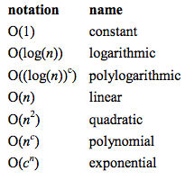

Big O Complexity and Notation
Week 8
If you’re like me, then you have no idea what Big O complexity is. I’m going to make this as simple as possible for non-engineers. The Big O is a computer science theory. I best understood it as it is similar to a function in your advanced algebra, trig, or calculus course. You can call this function “order”. The reason why there is this “Big O Complexity” is because code takes time to run. That’s why refactoring is important. It simplifies our code and it should help simplify some loops and other complex operations. In aspect, our code that we have been practicing with isn’t bad. But in a real project with many lines and lines of code and loops, every second millisecond counts. More time requires more memory. For us, right now 20 lines of code might take .003 seconds. What if we had thousands or millions of lines of code? This is the complexity. To make sure we have the correct Big O notation to maximize the efficiency of the code we run. This Big O methodology is primarily found in algorithms. Developing and running long algorithms take a lot of time and this is where the knowledge of Big O complexities comes in handy. In the examples below, is each of the Big O’s notations and graph showing a comparison between elements and operations.

I hope math is your strong suit, because I’m not explaining how functions work. I’m not a CS major so I can’t explain it while timeboxed.
Some additional references I used for this blog
A Gentle Introduction to Algorithm Complexity Analysis by Dionsys ZindrosMIT document from it's Intro to Computers and Programming Class
Computer Science 101 Big O Notation by Dave Perrett
Big O CheatSheet listing the best orders per operation
Big O Notation Explained by Justin Abrah